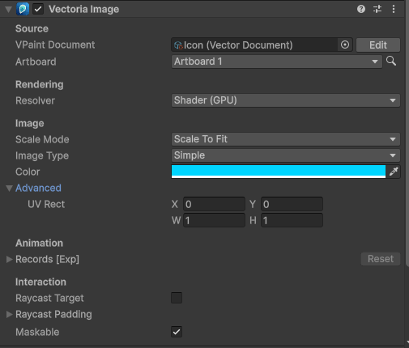

uGUI
VectoriaImage in the uGUI Canvas.
VectoriaImage (namespace Vectoria) is an Image, so it takes part in masking, raycasting and layout like one. It draws one artboard of a .vpaint.
Drag a .vpaint into the scene
The quickest way to get a Vectoria Image: drag a .vpaint from the Project window into the Hierarchy or the Scene view. The new image uses the document’s first artboard and takes that artboard’s size (scaled down to fit 512 px). It is placed under the item you drop on or the selected one when that is inside a Canvas, otherwise under the first Canvas in the scene, and a Canvas is created if there is none. You can also drop a UI Vectoria artboard asset to use that artboard. The drop can be undone with Ctrl+Z.
Add it to a Canvas
- Create it with
GameObject › UI (Canvas) › Vectoria Image, or add the componentUI › Gtion › Vectoria Imageto a GameObject under a Canvas. - Set VPaint Document to your
.vpaintand pick the Artboard. The button beside the document opens it in the painter (Edit, or Create when the field is empty). - If the inspector warns about Canvas channels, press Fix Canvas Channels. See Canvas Setup.
The inspector

| Section | Field | Meaning |
|---|---|---|
| Source | VPaint Document | The .vpaint to draw. |
| Artboard | Which artboard to show. The magnifier beside it lists the project's UI Vectoria artboards, and picking one sets the document and the artboard together. | |
| Rendering | Resolver | Default (Project Settings), Shader (GPU) or MeshBatch (CPU). Painter2D (UI Toolkit's own vector painter) is not available in uGUI. |
| Anti-Alias | MeshBatch only: soften edges with a one-pixel fringe. It costs about twice the vertices, so leave it off when MSAA is on. | |
| Image | Scale Mode | Scale To Fit, Scale And Crop or Stretch To Fill. |
| Image Type | Simple, Tiled (the artboard repeats; Pixels Per Unit Multiplier sets the tile size, higher is smaller) or Filled (Fill Method, Fill Origin, Fill Amount, and Clockwise for radial fills). Sliced is not supported. | |
| Color | Tints the artwork. | |
| Advanced › UV Rect | Show only a window of the artboard. | |
| Animation | Records [Exp] | Start values for animation records. |
| Interaction | Raycast Target | As on any Graphic: whether the image receives pointer events. Turn it off for decoration so it does not block clicks. |
| Raycast Padding | Grows or shrinks the clickable area. | |
| Maskable | Whether Masks and RectMask2D affect it. |
Resolvers in uGUI
- Shader (the default): one quad per image, and a shader evaluates the outlines. All shader-drawn images on a Canvas share one material and one data texture, so they batch together until a different material (a Mask or a Text) sits between them in hierarchy order. It needs the Canvas channels.
- MeshBatch: a tessellated mesh handed to
OnPopulateMesh. No shader or Canvas channels needed. Add aRectMask2Dto cropScale And Cropor a UV window.
Limits are those of the shader renderer: no live effects, patterns, text, images or blend modes. See Choosing a resolver.
In code
var img = GetComponent<VectoriaImage>();
img.document = doc;
img.resolver = VectorImageResolver.Shader; // UI Toolkit uses VectorResolver instead
if (!img.CanvasChannelsOk) img.FixCanvasChannels();
bool tile = img.isRasterDrawn; // currently drawn from a raster tileIn this section
- Canvas Setup: the shader channels the Shader resolver needs
- Raster LOD: pre-baked tiles for small icons
Demo
Demo/RealisticHud/Scenes has RealisticHudUGUI (vector icons) and RealisticHudUGUI_UnityRaster (raster sprites from a 2K atlas, for comparison).